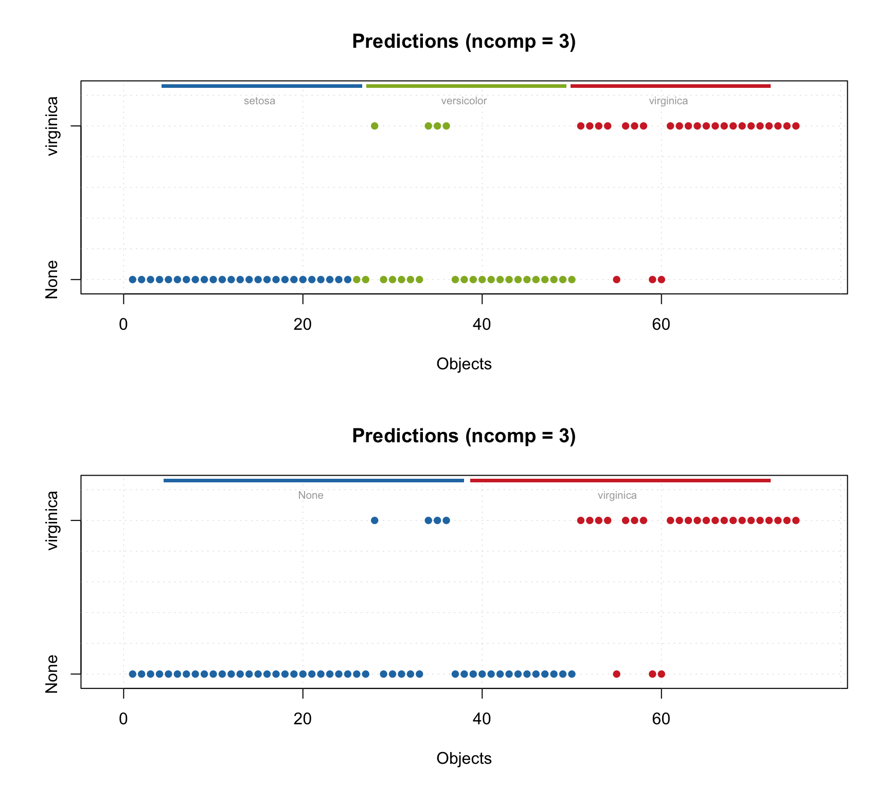
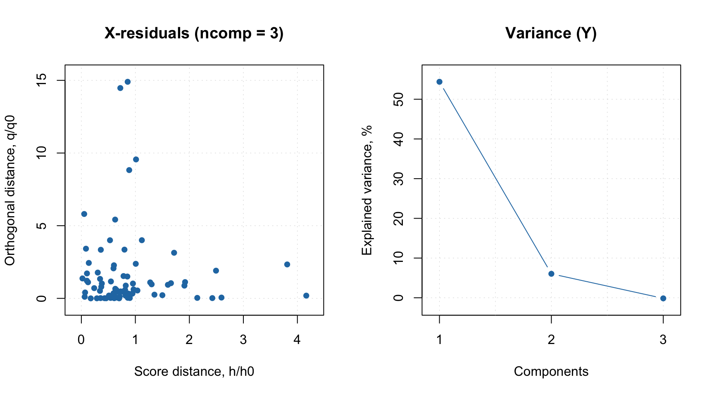
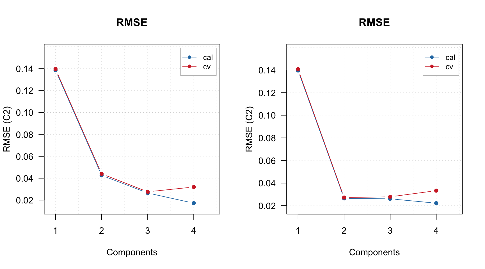

Interval PLS
Interval PLS (iPLS) is a variable selection method used mostly for spectroscopic data proposed by Lars Noergaard at al in 2000. The main idea is try different parts (or intervals — hence the name) of spectra and their combinations to find the most relevant for prediction of a response variable. There are two algorithms — forward and backward.
Forward iPLS
The forward approach works as follows
- Split spectral data into \(N\) intervals
- Create an empty vector with selected intervals
- Create a model where intervals in the vector (already slected) are combined with one of the rest. If combination improves the model, add this new interval to the vector.
- Repeat previous step until there is no improvements.
Apparently, when nothing is selected, on step 3 the algorithm simply create model for every interval available. As you can see, iPLS is based on iterative procedure. If you have 20 intervals you need to create 20 models on the first step, 19 models on the second step and so on.
In mdatools, you can run iPLS selection by using function ipls(). You have to specify matrix with predictors (x) and responses (y), number of components in global model (glob.ncomp), and define the intervals. In addition to that, you can also specify parameters of cross-validation (cv) as well as criterion for selection of optimal number of components (ncomp.selcrit) for local models similar to PLS. Forward iPLS is used as a default algorithm.
Intervals can be defined using one of the following three parameters: number of intervals (int.num), width of an interval (int.width) or specify start and end of each interval as a two-column matrix with variable indices (int.limits). In addition to that, you can specify maximum number of component for local models (int.ncomp) and maximum number of iterations — so method will stop regardless if you have improvements or not (int.niter). By default the maximum number of iterations is limited to 30.
Here is an example of applying iPLS for Simdata (for concentration of second chemical component, C2) using 15 intervals.
data(simdata)
X = simdata$spectra.c
y = simdata$conc.c[, 2, drop = FALSE]
m = ipls(X, y, glob.ncomp = 4, int.num = 15)##
## Model with all intervals: RMSECV = 0.027572, nLV = 3
## Iteration 1/ 15... selected interval 6 (RMSECV = 0.030405, nLV = 1)
## Iteration 2/ 15... selected interval 11 (RMSECV = 0.027882, nLV = 3)
## Iteration 3/ 15... selected interval 1 (RMSECV = 0.027509, nLV = 3)
## Iteration 4/ 15... selected interval 2 (RMSECV = 0.027243, nLV = 3)
## Iteration 5/ 15... selected interval 13 (RMSECV = 0.027210, nLV = 3)
## Iteration 6/ 15... selected interval 12 (RMSECV = 0.027201, nLV = 2)
## Iteration 7/ 15... no improvements, stop.As you can see, by default method shows information for every step in the console. Use parameter silent = TRUE to change this behaviour. From the example above we can see that the global model had RMSECV = 0.027572 with 3 components. Creating local models with individual intervals gave the best performance with RMSECV = 0.030405 (interval #6). Combination of the interval #6 with interval #11 (next step) gave RMSECV = 0.0027882. The small improvement was obtained for adding 4 more intervals giving final result with RMSECV = 0.027201.
There are several ways to explore the iPLS results both graphically and numerically. First of all, summary will show full information about the selected interval, including number of variables on both ends:
##
## iPLS variable selection results
## Method: forward
## Validation: venetian blinds with 10 segments
## Number of intervals: 15
## Number of selected intervals: 6
## RMSECV for global model: 0.027572 (3 LVs)
## RMSECV for optimized model: 0.027201 (2 LVs)
##
## Summary for selection procedure:
## n start end selected nComp RMSE R2
## 1 0 1 150 FALSE 3 0.02757234 0.965
## 2 6 51 60 TRUE 3 0.03040477 0.958
## 3 11 101 110 TRUE 3 0.02788242 0.965
## 4 1 1 10 TRUE 3 0.02750915 0.966
## 5 2 11 20 TRUE 2 0.02724335 0.966
## 6 13 121 130 TRUE 2 0.02720961 0.966
## 7 12 111 120 TRUE 2 0.02720089 0.966Also you can see the first step (performance of individual models) and the selected interval by using function plot() for the whole model:

The red curve here is an average spectrum. Bars are intervals, height of each bar corresponds to RMSECV value for local model made using variables from this interval as predictors (first iteration). Number inside each bar is number of PLS components used in the local model. Green color shows intervals which have been selected at the end and dashed line shows error for the global model
You can also see the improvements of RMSECV graphically:

Dashed line in this case shows RMSECV value for the global model with all intervals included.
Fnally, you can get both seleced intervals and corresponding indices of variables (all of them not just interval limits) as follows:
## [1] 6 11 1 2 13 12## [1] 1 2 3 4 5 6 7 8 9 10 11 12 13 14 15 16 17
## [18] 18 19 20 51 52 53 54 55 56 57 58 59 60 101 102 103 104
## [35] 105 106 107 108 109 110 111 112 113 114 115 116 117 118 119 120 121
## [52] 122 123 124 125 126 127 128 129 130Also the model object contains the initial global model for full data (m$gm) and final PLS model made for the all selected data, m$om. In the following example I compare RMSE plots for both:

Backward iPLS
In backward iPLS, instead of selecting best intervals we do the opposite — get rid of the worst. So, at the first step, we try to remove every interval from the data to see if it gives any improvement. If it does, we keep it as exluded and then try to remove another one. The process continues until no improvement is observed.
To use the backward method simply specify parameter method = "backward" when call ipls(). The rest, including plots and statistics, is the same.